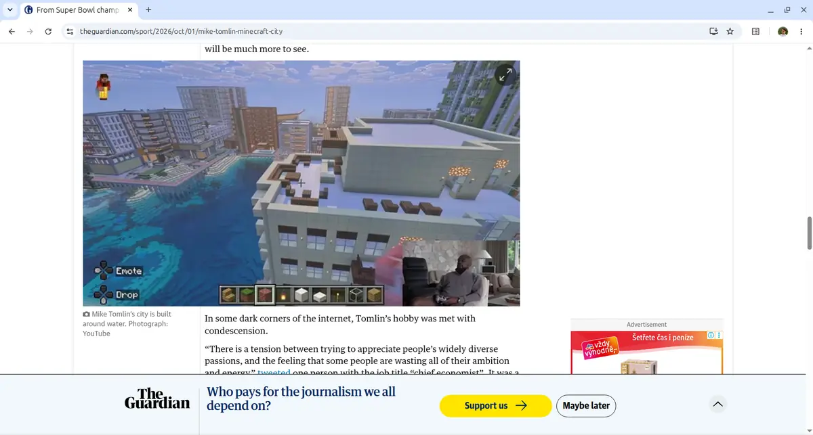
The tale in chapters
- Once upon a time, the web was a library
- The dragons move in
- A small book with a big job
- The reading room
- The library tower
- Ravens from distant towers
- The chronicle that does not burn
- When the gate stays shut
- For castle builders
- What the hero leaves at home
- Your treasure, your chest
- Choose your mount
- Join the quest
PrologueOnce upon a time, the web was a library
Once upon a time, the web was a quiet library. Every page was a scroll. You unrolled it, you read it, you rolled it up again. Scholars wrote them, curious people read them, and nobody had to accept any cookies to get through the door.
It was not a beautiful library. The scrolls were written in every hand imaginable, some in bright green on purple. But the words were there, and you could reach them.
Then the dragons moved in.
Chapter oneThe dragons move in
They did not arrive all at once. First came a small one that asked, very politely, whether you would like to subscribe. Then one that played a video nobody had asked for, with the sound on. Before long the library was full of them:
- The Cookie Wyrm sits on the doorstep and will not move until you have clicked through forty-two switches and agreed to all of them.
- The Newsletter Basilisk waits until you are halfway down the page, then stares at you from the middle of the screen.
- The Autoplay Hydra. Close one video and two more start in the corner.
- The Infinite Scroll Serpent has eaten the footer of every page it ever met.
- And above them all, the Great JavaScript Dragon. Once a humble helper, it no longer brings you the page at all — only a cart of bricks and a book of instructions. It builds the castle in front of you while your laptop fan howls and your battery quietly weeps.
Readers still came for the scrolls. They just had to fight their way to them.
Chapter twoA small book with a big job
In the early days of printing, brevier was the name of a small size of type — small enough to fit a whole book of daily readings into a traveller's pocket. People carried those little books everywhere.
Brevier the browser is that pocket book for the web. It does one thing: it reads. It walks past the dragons, takes the scroll, and brings it back to you on clean paper.
The trick is simple. Brevier never lets a dragon in, because it never runs JavaScript — not a little, not for one special site, not ever. It downloads the page, finds the article inside, turns it into Markdown on your own computer, and sets it again in its own typography. The site decides the words. You decide how they look.
Chapter threeThe reading room
Every page you open arrives in the same calm room:
- Your type on every site — Noto Sans at a comfortable size, about 65 characters to a line, headings lighter than the text, until you choose otherwise: Settings offer four ready-made styles, a serif Book among them, and let you fine-tune the face, the size, the line length and the spacing, once for every site.
- Ivory paper instead of glaring white, and a warm dark theme for the night watch.
- Hyphenation by the page's language, so the right edge stays calm — or perfectly straight, if you turn on justified text.
- Zoom from 67% to 200% that scales the whole layout, so a line still holds about 65 characters.
- Poems keep their lines and stanzas. Even bards are welcome.
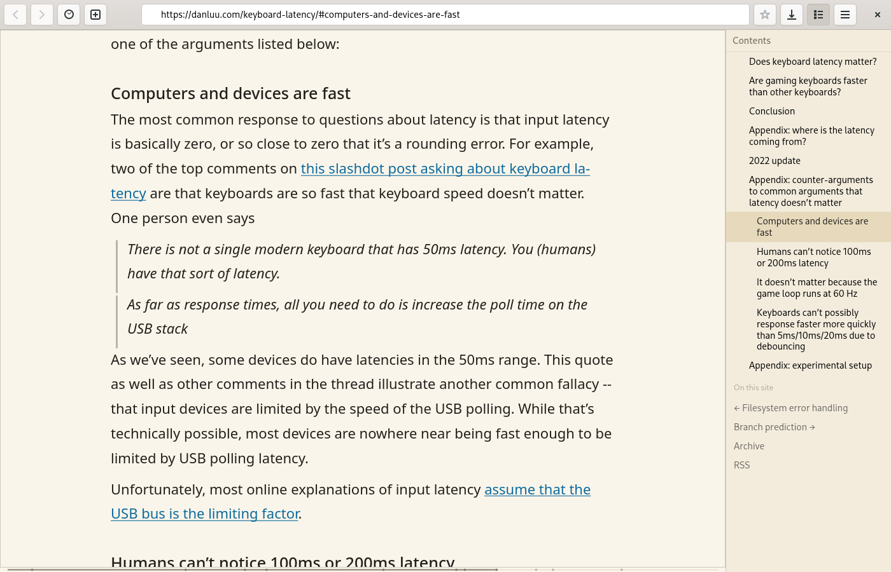
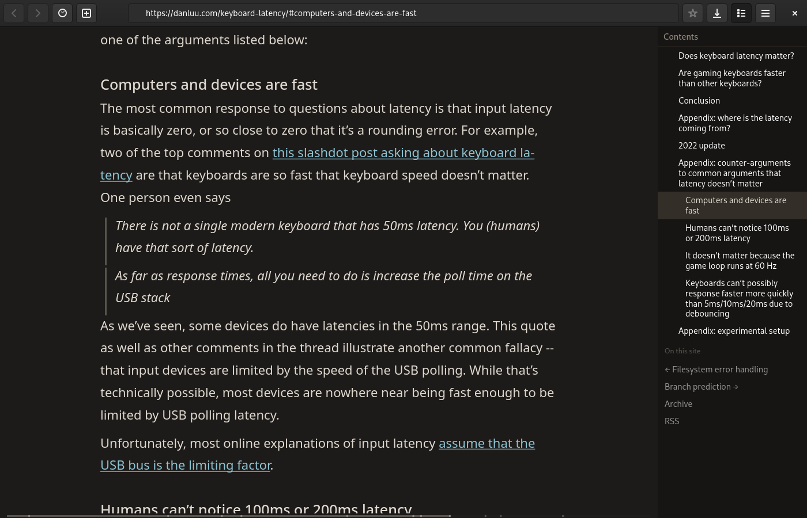
Chapter fourThe library tower
Some of the best scrolls on the web live in git repositories: manuals, books, guides.
Type gh:owner/repo in the address bar and Brevier opens the README, with the
project's documentation laid out on a shelf at the right. gl: works for GitLab.
End the address with a slash, and you see what the folder holds.
The same shelf shows the contents of any long page and marks the section you are reading, so you never lose your place in a tall tower of text.
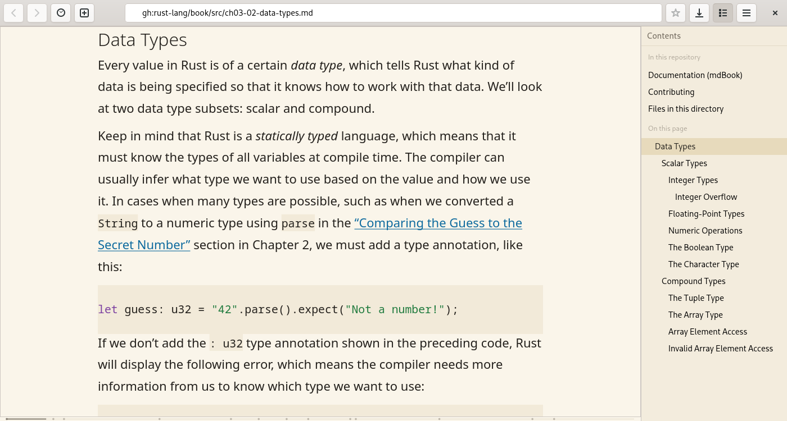
Chapter fiveRavens from distant towers
Feeds are the ravens of the web: RSS, Atom and JSON Feed. Brevier opens them as lists
of entries with the date, the author and a short summary. A feed:// link
works, and so does a feed saved as a file. A raven that carries the comments of one page
reads as a conversation, and so do the great taverns of talk — Hacker News, Lobsters and
the forums built on Discourse: every reply with its author and its day, the answers set
in under the questions. On Habr the replies come late, fetched by a messenger the page
sends with a script; Brevier sends that same messenger itself, once, and seats the
replies under the article.
Anything you type that is not an address becomes a search on DuckDuckGo, and the results come back as a plain list of links. No raven was harmed.
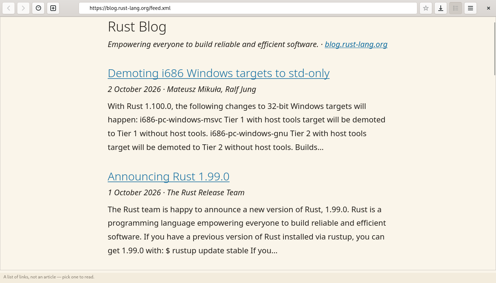
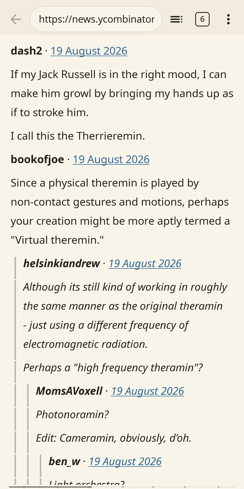
Chapter sixThe chronicle that does not burn
Every article you read is copied into your own archive: plain Markdown, compressed,
one file per page. Ctrl+Shift+F searches all of it. When a site changes its
mind — or vanishes into the mists — your copy is still on your shelf.
Long reads remember where you stopped. Come back to a page you read for ten minutes or more, and Brevier offers Continue from 43%. It does not jump on its own; heroes like to choose. A thin line under the text shows how far you have come.
And if a page is truly gone, Brevier can fetch the last good copy from the Wayback Machine — but only when you press the button. Until then, archive.org hears nothing about what you read.
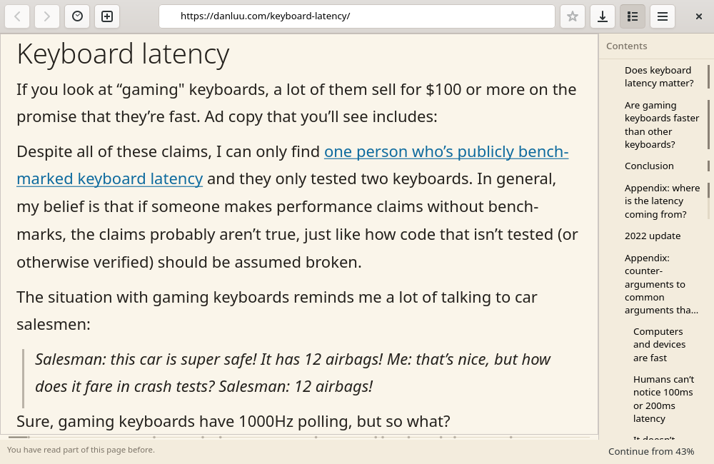
Chapter sevenWhen the gate stays shut
Not every castle opens. Some sites are built entirely out of JavaScript, and some keep
an anti-bot wall at the gate. Brevier knocks politely, gives its honest name, and never
climbs the wall. When the gate stays shut, it says so plainly and offers
Open in your browser — or press Ctrl+O — and the page goes to your
other browser.
Pages that travel over plain http are marked Not secure. There is no
padlock icon on the others, because a padlock only means the road was private, not that
the castle is friendly.
On our own test set of 108 live pages, measured in September, 80 read well. Not every quest ends in victory; we publish the score anyway, and how we counted it.
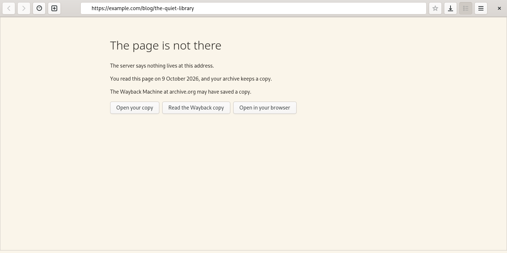
Chapter eightFor castle builders
If you build websites, Brevier can tell you how yours looks to a reader who runs no
scripts. brevier --check https://your.site/ gives a score from 0 to 100, says what
to change, and prints the arithmetic — so you can argue with a number instead of a
mystery.
There is a GitHub Action too. It writes the report into the job summary and fails the build when a page falls below your mark:
- uses: gurov/brevier@main # or a release tag
with:
urls: |
https://example.com/
min: 80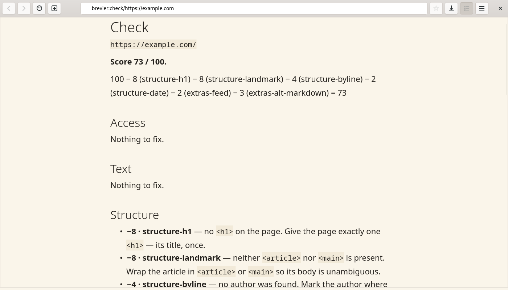
Chapter nineWhat the hero leaves at home
A good adventurer packs light. Brevier will not carry:
- JavaScript. Never, in any form. That is the whole point.
- The site's CSS. The type is yours.
- Forms, logins and cookies. Here the web is read-only, on purpose.
- Video, audio and extensions.
- An AI model, by default. Pages are read by plain rules, so the words are always the author's. If a helper model ever joins the party — say, for pages the rules can't read — it will travel in its own bag and sleep until you wake it.
And one honest limit: screen readers work on Linux only for now. GTK's accessibility does not reach Windows yet, and on Android TalkBack should read the native text, but nobody has tried it yet. We would rather tell you here than let you find out the hard way.
Chapter tenYour treasure, your chest
History, open tabs and bookmarks are plain text files, one line per entry. Delete a
line to forget a page. The archive is Markdown in the standard LZ4 format, so
lz4 -d opens it without Brevier. There is no database and no account.
Brevier itself counts nothing and sends nothing home. Sites can still see that you visited them, as they always could — Brevier is a reader, not an invisibility cloak.
Chapter elevenChoose your mount
Linux
A Flatpak that works on any distribution,
from Brevier's own signed repository: GNOME Software or Discover opens it with a click,
or flatpak install --user https://brevier.bizibah.com/flatpak/brevier.flatpakref,
and new versions arrive with flatpak update. Or a tarball for systems that
already have GTK 4.
Those who keep a forge at home can build it from
crates.io with Rust and GTK 4:
cargo install --locked brevier --features ui.
Windows 10 and 11
An installer that sets Brevier up for you alone, with no administrator rights, or a zip that runs from any folder. The installer is not signed yet, so Windows first says Windows protected your PC: choose More info, then Run anyway. Dragons have made Windows a little nervous.
Android 7 and later
A native app over the same core — it draws the article as real text, not in a web view — with tabs, the shelf, find on page and the dark theme. Install it from F-Droid, which keeps it up to date, or download the same APK from the releases.
The command line
brevier https://example.com/article prints the article as Markdown.
Scrolls for scripts. Every release carries it as one file for Linux, macOS and
Windows, with nothing to install beside it, not even GTK. Or build it:
cargo install --locked brevier --features save.
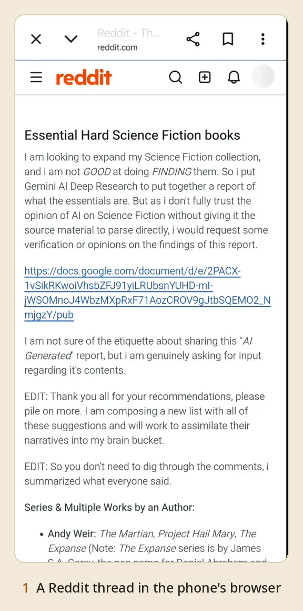
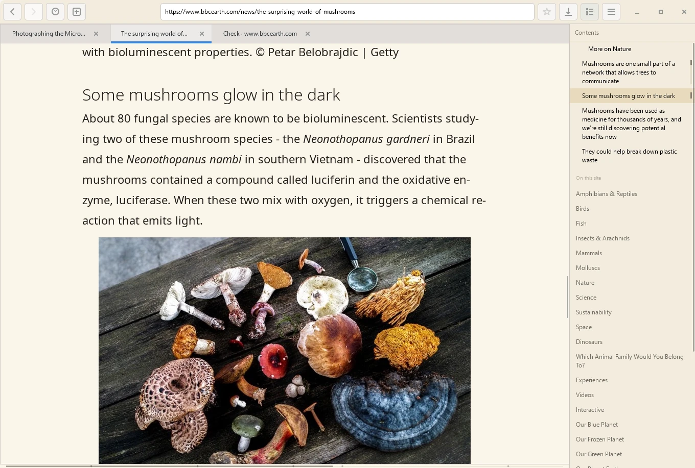
EpilogueJoin the quest
Brevier is free software under MIT or Apache-2.0, built in the open on GitHub. Reports from the field are welcome in the issues, and so are patches — as long as they do not bring a dragon with them. The manifesto says what Brevier promises, and the roadmap says where it is going next.
New releases arrive by raven: the releases feed.
❦ ❦ ❦